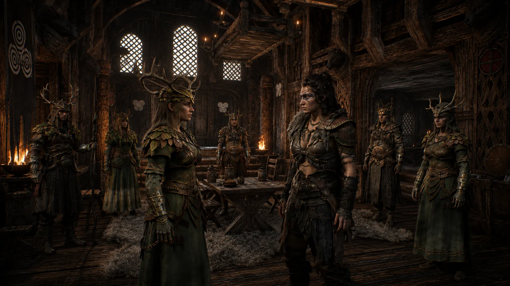

Eclipsed Realms / Field guide
The player’s handbook.
Everything you need to survive the realm: building your adventurer, fighting, casting, travelling and playing with friends. Start with the question you came for.

A place to begin
New to the realm? Start here.
Six short reads, in the order most adventurers need them.
- 01Create your adventurerName, attributes and personality, before you step out.
- 02Survive a fightGuard, parry, dodge and keep an eye on Stamina.
- 03Cast your first spellDeploy a Relief board and stand in its influence.
- 04Find your way backDiscover waypoints and travel with the Cursed Doll.
- 05Mind who is watchingCrime, witnesses and what people remember.
- 06Play with friendsHost or join a game for up to four players.
The collection
Browse by section.
69 articles in 8 sections.
Contents
Section 01
Begin the journey
Everything about your adventurer is decided before you enter the realm: who you are, how you are built and how you tend to speak. Read this section first, then take the fight, magic and travel sections in any order.
The character creatorChoose a name, appearance, attributes and a starting personality.
New Game and Host Game open a three-page creator: Appearance, Attributes and Personality. Move between pages with the page arrows, LT and RT, or Page Up and Page Down. Enter a name, spend every available point and confirm. The footer shows what is still missing.
With a controller, press A on the name row to open the on-screen keyboard. The creator is not available from the pause menu afterwards, so check your choices before you confirm.
When you host a game, the creator doubles as a lobby where each guest makes their own character. See the article on hosting and joining.
| Pages | Appearance · Attributes · Personality |
|---|
| Action | Keyboard and mouse | Gamepad |
|---|---|---|
| Change page | Page Up / Page Down | LT / RT |
RelatedAttributes and what each point doesPersonality and your voiceHost and join a game
Attributes and what each point doesStrength, Agility, Stamina, Vitality and Charisma are fixed for the journey.
You must spend every attribute point before you begin. Points are spent in steps of five and each trait can hold at most five shown points. The numbers you see are the shown points; the creator tracks them in fives behind the scenes.
Your choices are fixed for the journey. Gaining a level does not give you more attribute points, so choose with care. Use the Skills menu for the perks you earn as you level.
| Strength, per point | +15 Attack Power |
|---|---|
| Agility, per point | +5 Stealth Rating |
| Stamina, per point | +5% maximum Stamina |
| Vitality, per point | +5% maximum Health |
| Charisma, per point | +5 starting standing with people |
| Maximum per trait | 5 points |
| Points to spend | 12 (New Game) · 18 (New Game+) · 25 (New Game++) |
RelatedNew Game, New Game+ and New Game++Skills and levelling
New Game, New Game+ and New Game++Begin again with more attribute points against tougher foes.
The main menu offers Host Game, Host Game+ and Host Game++. Higher tiers give you a larger pool of attribute points and make every enemy tougher: their Health and damage are multiplied.
Plan your attribute points around the tier you are about to enter.
| Attribute points | 12 / 18 / 25 |
|---|---|
| Enemy Health and damage | ×1.0 / ×1.2 / ×1.4 |
RelatedAttributes and what each point doesElites, bosses and groups
Personality and your voiceWitty, Empathetic and Bold are three separate scores that grow with how you speak.
The creator gives you 15 personality points to place in steps of five. Spend them all to finish creation. Witty favors clever, disarming replies, Empathetic favors kindness and understanding, and Bold favors direct, commanding replies.
As you play, replies written in a given style raise that score, and a notice tells you when it changes. Personality is a manner of speaking: it is separate from Karma and from your standing with factions, and a bold reply is not automatically a cruel act.
| Starting points | 15 |
|---|---|
| Allocation step | 5 points |
| Styles | Witty · Empathetic · Bold |
RelatedKarmaThe character creator
Skills and levellingSpend skill points on perks across seven branches.
Your level grows with experience. Open Player Info, then Skills, to spend skill points. The seven branches are Melee, Reliefs, Sneak, Speech, Utility, Weapon Techniques and Dirty Tricks.
Each perk rank costs one skill point, linked perks have prerequisites and every perk has a maximum rank. Purchases are permanent and there is no refund, so read a perk before you commit points to it.
| Cost | 1 skill point per rank |
|---|---|
| Branches | Melee · Reliefs · Sneak · Speech · Utility · Weapon Techniques · Dirty Tricks |
| Refunds | None |
RelatedAttributes and what each point doesUnlocking, enhancing and mastering spellsUtility perks
After a fallRespawning restores your Health and Stamina but not your corruption.
When you respawn you return with full maximum Health, including your Vitality bonus, and full Stamina. Food and water stay where they were. Any meal or drink recovery that was still running stops.
Corruption remains after death. In co-op, a downed teammate can be revived instead of respawning. See the article on reviving a friend.
Controls and settingsDefault keyboard and gamepad bindings, plus remapping and accessibility.
Every action has a gamepad equivalent. The Settings screen lets you remap Interact and the action rows, and offers a subtitle background option for easier reading.
Relief spell keys depend on your device. On keyboard, press 1 to 5. On a gamepad, hold RB and press B, A, X or Y for slots 1 to 4, and press LB with RB for slot 5. A quick tap of RB throws or recalls a deployed Relief.
| Action | Keyboard and mouse | Gamepad |
|---|---|---|
| Move / look | W A S D, mouse | Left stick, right stick |
| Attack | Left mouse | RT |
| Block | Right mouse | LT |
| Dodge (while moving) | Q | Right stick click |
| Jump | Space | A |
| Crouch | C | B |
| Sprint / gallop | Left Shift | Left stick click (L3) |
| Interact | E | X |
| Lock on | F | RB + right stick click |
| Relief spells 1 to 5 | 1 2 3 4 5 | RB + B / A / X / Y; LB + RB |
| Deploy or recall a Relief | G | Tap RB |
| Weapon wheel | T | LB |
| Inventory | Tab | D-pad left |
| Pause | Esc | Menu / Start |
| Wait | V | View / Back |
Section 02
Fighting and defending
Combat spends Stamina. Attack, guard and move with an eye on that bar and you will outlast most enemies. These articles cover the basic defensive tools first, then techniques, status effects and the way enemies fight back.
Lock onKeep one dangerous enemy in view while you fight.
Lock onto the eligible enemy nearest the centre of your view. Press the button again to release. The camera follows your target, and its name, level and Health appear at the top of the screen. If the target dies or vanishes, the lock ends or lets you choose another.
| Action | Keyboard and mouse | Gamepad |
|---|---|---|
| Lock on / release | F | RB + right stick click |
RelatedBlockingHeavy attacks
StaminaAlmost everything you do in a fight draws on it.
Stamina pays for blocking, dodging, techniques and Holy and Blood magic. It starts to refill one second after you last spent any, so a short pause in the fight is worth taking. The Recovery perk halves that delay.
If a blocked hit would cost more Stamina than you have left, your guard breaks. Keep a reserve before you commit to a long exchange.
| Dodge | 15 Stamina (11.25 with Evasive) |
|---|---|
| Weapon technique | 50 Stamina |
| Physical Ultimate | 100 Stamina |
| Refill delay | 1 second after spending (0.5 s with Recovery) |
BlockingFace the attack and guard to reduce its damage.
An ordinary block protects a 90-degree cone in front of you. Hits from the side or behind get no guard bonus. Each blocked hit adds Armor for that hit and costs Stamina, and a shield gives by far the strongest guard.
If you wield two weapons, only the stronger guard bonus applies. Weapon techniques and physical Ultimates can be blocked but not parried.
| Shield | +300 Armor per blocked hit |
|---|---|
| Sword, axe, dagger, greatsword, greataxe | +150 Armor |
| Torch | +15 Armor |
| Bow, bare hands, Relief board | +10 Armor |
| Guarded zone | 90 degrees in front |
Shield parryRaise your shield in time with an attacker’s glow to turn defence into an opening.
Pressing block with a shield opens a half-second parry window. Time the press to the attacker’s visible glow: a successful parry prevents the hit and staggers the attacker for a second. You still pay the normal Stamina cost of a blocked hit.
You can also parry ordinary arrows. This stops the damage but does not stagger the archer. Magic, weapon techniques and physical Ultimates cannot be parried.
| Parry window | 0.5 seconds |
|---|---|
| Between windows | At least 0.75 seconds |
| Angle | 90 degrees either side |
| Attacker stagger | 1 second |
RelatedBlockingGuard break
Guard breakRunning out of Stamina leaves your guard open.
If a blocked hit costs more Stamina than you have, the attack lands without your guard bonus, your Stamina drops to zero and your block ends. You are also staggered for one second unless something protects you from stagger.
| Trigger | Block cost exceeds your Stamina |
|---|---|
| Result | Stamina to 0, one second stagger |
DodgeRoll in the direction you are moving to escape a strike.
Press the dodge button while moving to roll in your movement direction. Dodging while standing still does nothing. A dodge cannot cancel your own attack, technique or cast unless that option is switched on in the settings. You cannot dodge while mounted, climbing, swimming, trapped or unable to move.
| Cost | 15 Stamina (11.25 with Evasive) |
|---|
| Action | Keyboard and mouse | Gamepad |
|---|---|---|
| Dodge (while moving) | Q | Right stick click |
RelatedShadow StepStamina
Shadow StepReplace your dodge with a teleport behind a locked-on enemy.
Once learned, equip Shadow Step in the Dodge row of the Techniques page. Your dodge button then teleports you behind a locked-on enemy within ten metres and turns you to face it, with a short burst of speed. If there is no valid target, no safe space behind it or the ability is cooling down, you perform an ordinary dodge instead.
| Range | 10 metres |
|---|---|
| Cooldown | 20 seconds |
| Speed bonus | +30% for 3 seconds |
Heavy attacksHold attack to commit to a stronger blow.
Tap attack for a light swing. Hold it past a fifth of a second for a heavy attack that deals one and a half times the damage. An unblocked heavy hit interrupts and briefly staggers ordinary enemies; elites are staggered less and bosses resist it.
| Hold time | 0.2 seconds |
|---|---|
| Damage | 1.5× |
BowsEach arrow needs a complete draw before it can fly.
Hold attack to draw and release to shoot. A tap that ends before the bow is ready fires nothing. After a shot the bow recovers briefly; keep attack held to start the next draw. Cancelling or holstering an unfinished shot returns the arrow to your quiver.
| Recovery after firing | 0.35 seconds |
|---|
RelatedShield parryWeapon bonuses
Weapon bonusesThe weapons you wield bring bonuses beyond their active attacks.
Only wielded weapons contribute. Main hand and offhand add together, and two-handed swords and axes count double. Swords pierce armor, axes improve bleeding, daggers strengthen critical hits from techniques, shields resist bleeding and bows pick a bonus on each ordinary hit. Enemies benefit from the weapons they wield too.
Weapon mastery improves these bonuses. Mastering a technique does not by itself grant passive weapon mastery.
Techniques and UltimatesBuild a fighting style around a weapon technique and a powerful finishing move.
Each weapon family offers one technique. Physical Ultimates follow your main-hand weapon family; shields have a technique but no Ultimate. All techniques share one cooldown and all physical Ultimates share another, so using a technique never locks out your Ultimate. Switching weapons or respawning does not reset either cooldown.
Unlock a family’s default Ultimate through its perk. Some alternate Ultimates are taught by particular people in the world, and a teacher who regards you coldly will teach you nothing. Both techniques and Ultimates can be blocked but not parried.
| Technique cost | 50 Stamina |
|---|---|
| Ultimate cost | 100 Stamina |
| Technique families | 10 |
| Ultimate weapon families | 9 |
Status effectsRoot, freeze, fear, stagger and knockdown each create a different opening.
Root stops movement but leaves attacks and turning. Freeze stops movement and actions. Slow reduces speed. Fear sends enemies fleeing and stops their attacks. Knockdown covers the push, time on the ground and getting up. Stagger interrupts attacks for the length of the recoil.
Boss or Elite rank does not grant immunity to every control effect; individual attacks and protections can shorten or prevent a particular one. Curses, bleeds and tethers keep up damage over time, and blessings such as Holy Armor and Blood Offering strengthen you.
Elites, bosses and groupsStronger foes and coordinated enemies change the rhythm of a fight.
Ordinary elite enemies become 50% faster at half Health, without gaining Health or damage. Some final bosses have their own phases. Enemies also spend Stamina to guard, so shield users block more often and may time a parry of their own.
Groups space out their spells and take turns. Normally two melee attackers press one target at once, dropping to one while that target is down, and waiting enemies reposition.
| Elite phase change | At half Health: ×1.5 movement |
|---|---|
| Melee attackers on one target | 2 (1 while it is down) |
RelatedNew Game, New Game+ and New Game++Status effectsBlocking
Traps and dirty tricksCatch pursuers in a trap or blind them with Pocket Sand.
Use a trap item to place it; a green or red preview shows whether the position is valid. A trap arms after two seconds. A bear trap deals damage and roots its victim, and a rope snare hoists them from a suitable tree. A caught victim escapes by pressing Interact repeatedly. Your traps never catch you or your allies.
Equip Pocket Sand as your throwable and use Throw to blind nearby hostile enemies in a short cone. Blinded enemies lose sight and pause. Each throw uses one Pocket Sand and starts a cooldown even if you miss.
| Trap arming delay | 2 seconds |
|---|---|
| Pocket Sand range | 3 metres, 60 degree cone |
| Pocket Sand cooldown | 12 seconds |
RelatedSneaking
Section 03
Magic and Reliefs
Magic in the realm is written through Reliefs, carved boards that belong to one of three schools: Holy, Blood or Dark. You carry a Relief, deploy it, then cast from within its influence. Holy spends Stamina, Blood spends Stamina and Health, and Dark spends nothing but leaves a mark.
Reliefs and the three schoolsA Relief is both a carried weapon and the focus of one school of magic.
Wield a Holy, Blood or Dark Relief to use that school’s unlocked spells, to deploy and recall its board, or to defend with a held-board swing and block. While the board is deployed it leaves your hand and enables the school’s ranged bolt. Putting the Relief away removes its wielded abilities until you equip it again.
Enemy-owned boards cannot be looted or kept.
| Schools | Holy · Blood · Dark |
|---|---|
| Spells per school | 4 regular spells and an Ultimate with two choices |
RelatedDeploy a Relief and castHoly magicBlood magicDark magic
Deploy a Relief and castPlace a board, stand within its influence and cast with the matching Relief in hand.
With a Relief wielded, use the deploy action to throw it in front of you. The board settles and grows, spreading its influence around it. Stand inside that influence while holding the matching school’s Relief, then cast spells 1 to 5. You can have one board deployed per school, so several schools can be active at once.
Only one caster uses a board at a time. If the nearest board is busy, another free board in range can serve you; if none is free the cast is refused and costs nothing. Short messages explain a blocked cast: a locked spell, a cooldown, an inactive Relief, full Health for a heal, or too few resources.
To recall your board, wait for it to finish growing and for its three-second recall lock to pass. Only the deployer can recall it. Anyone already casting finishes on the full-size board before it shrinks back to your hand. Corrupted characters cannot deploy a Holy Relief.
| Boards per school | 1 per player |
|---|---|
| Casters per board | 1 at a time |
| Recall lock | 3 seconds after growth |
| Action | Keyboard and mouse | Gamepad |
|---|---|---|
| Deploy or recall | G | Tap RB |
| Cast spells 1 to 4 | 1 2 3 4 | RB + B / A / X / Y |
| Cast spell 5 (Ultimate) | 5 | LB + RB |
RelatedThe cost of magicCasting togetherDark Points and corruption
Who can castHold the matching Relief and stand within a free board’s influence.
To cast a school’s spells, wield its Relief and stand inside a deployed board of the same school. The board can be yours or another player’s. Only one caster can use a board at a time, and a busy board is skipped in favour of another free board in range.
If no suitable board is free, the cast is refused and costs nothing. A Blood sacrifice needs more Health than its cost, and a heal that would do nothing at full Health is refused unless an ally in the aura is hurt.
| Board requirement | Same school, deployed and free |
|---|---|
| Casters per board | 1 |
The cost of magicHoly spends Stamina, Blood sacrifices Health and Dark leaves a lasting mark.
Holy spells use Stamina. Blood spells use Stamina and a share of your maximum Health; you need more Health than the sacrifice, so a cast can never kill you. Dark spells cost no Stamina or Health but add Dark Points, and reaching 100 permanently corrupts your character.
Costs and cooldowns are paid when the spell visibly releases, not when you begin to cast. A cast interrupted before release costs nothing. Each school keeps its own Ultimate cooldown, and a school’s two Ultimates share it.
| Holy | Stamina |
|---|---|
| Blood | Stamina + 5% to 25% maximum Health (Blood Barrier: no Stamina, 50% Health) |
| Dark | +1, 2, 3, 5 or 10 Dark Points |
RelatedHoly magicBlood magicDark magicDark Points and corruption
Unlocking, enhancing and mastering spellsEach school has three skill lines of five ranks.
In the Reliefs branch of the Skills menu, each school has five ranks each of Unlock, Level Up and Mastery. Rank 1 applies to spell 1, and so on, and rank 5 applies to your selected Ultimate. A spell must be unlocked before it can be enhanced, and enhanced before mastery.
Mastery keeps the enhanced strength and adds a new effect. Read each spell for what it gains.
| Ranks per school | 5 Unlock · 5 Level Up · 5 Mastery |
|---|---|
| Cost | 1 skill point per rank |
Holy magicHealing, protection and a binding light.
Holy spells spend Stamina. Corrupted characters cannot cast them. Enhanced strengths are shown after the arrow. Mastery shares healing and protection with allies standing in the board’s influence.
Spell 1, Lesser Heal: heal 20% of maximum Health, 35% enhanced; you can cast it at full Health if an ally in the aura is hurt. Spell 2, Greater Heal: 45% then 80%. Spell 3, Holy Armor: +300 Armor for 20 seconds, +500 enhanced. Spell 4, Binding Light: roots enemies in a ten-metre wedge for five seconds, eight enhanced.
Ultimate, your choice of two. Divine Renewal restores 8% of maximum Health per second for eight seconds, 15% enhanced. Old Man’s Blessing heals immediately, regenerates over eight seconds and adds Armor that stacks with Holy Armor.
| Lesser Heal | 15 Stamina · 8 s cooldown |
|---|---|
| Greater Heal | 30 Stamina · 25 s cooldown |
| Holy Armor | 25 Stamina · 30 s cooldown |
| Binding Light | 25 Stamina · 15 s cooldown |
| Divine Renewal / Old Man’s Blessing | 50 Stamina · 90 s cooldown |
Blood magicSpend Health for sustain, speed and force.
Blood spells use Stamina and a percentage of your maximum Health. Spell 1, Blood Offering: sacrifice Health for 30 seconds of regeneration, +100 Attack Power and +200 Armor, more when enhanced. Spell 2, Blood Siphon: tether enemies within 50 metres of the board and drain their Health into yours for five seconds. Spell 3, Blood Rush: move 25% faster for 15 seconds, 45% enhanced. Spell 4, Blood Rupture: strike a lane 25 metres long and three wide for 150% of Attack Power, 275% enhanced.
Ultimate, your choice of two. Summon Demon calls one demon from your board that follows you for 45 seconds and takes a share of damage meant for you. Blood Barrier sacrifices half your Health for 30 seconds of invulnerability, 40 enhanced, but your own casting costs still apply.
| Blood Offering | 15% Health + 20 Stamina · 45 s cooldown |
|---|---|
| Blood Siphon | 5% Health + 25 Stamina · 30 s cooldown |
| Blood Rush | 5% Health + 15 Stamina · 30 s cooldown |
| Blood Rupture | 8% Health + 25 Stamina · 15 s cooldown |
| Summon Demon | 25% Health + 40 Stamina · 120 s cooldown |
| Blood Barrier | 50% Health · 60 s cooldown |
RelatedThe cost of magicUnlocking, enhancing and mastering spells
Dark magicPowerful effects that add Dark Points instead of costing resources.
Dark spells cost nothing in Stamina or Health. Each cast adds Dark Points, and at 100 you are permanently corrupted. Spell 1, Invisibility: conceal yourself for ten seconds while recovering Health. Spell 2, Void Pulse: knock down and push away enemies within 25 metres of the board. Spell 3, Fear: send enemies within 15 metres fleeing for five seconds, nine enhanced. Spell 4, Curse: curse one enemy the board can see within 25 metres for damage over ten seconds, which can pass on once when it ends.
Ultimate, your choice of two. Void Stasis freezes every other combatant within 50 metres of the board for five seconds. Dark Ascension lifts you into a hovering form for 20 seconds in which attacks release heavy Dark projectiles.
| Invisibility | +1 Dark Point · 25 s cooldown |
|---|---|
| Void Pulse | +2 Dark Points · 20 s cooldown |
| Fear | +3 Dark Points · 30 s cooldown |
| Curse | +5 Dark Points · 35 s cooldown |
| Void Stasis / Dark Ascension | +10 Dark Points · 45 s cooldown |
Dark Points and corruptionAt 100 Dark Points, corruption permanently changes your character.
Dark Points only go up through dark spells. At 100, you are corrupted for good: lowering your points later does not cure it, and the penalties do not stack.
Corruption is a trade. Your maximum Health, maximum Stamina and Stamina regeneration fall by 10%, and you can no longer cast Holy magic or deploy a Holy Relief, though you can still carry one. In return your Dark cooldowns are 25% shorter, Invisibility and Fear last 25% longer and Void Pulse pushes 25% farther. Corruption remains after death.
| Threshold | 100 Dark Points |
|---|---|
| Health, Stamina, Stamina regeneration | ×0.90 each |
| Dark cooldowns | −25% |
| Holy casting | Not possible |
RelatedDark magicAfter a fall
EclipsesAn eclipse strengthens magic and changes what some spells cost.
At full eclipse, Holy, Blood and Dark Relief damage rises by 15%, and Holy and Blood Stamina costs fall by 10%. A solar eclipse raises Dark damage by 25% in total. A lunar eclipse also lowers Blood Health sacrifices by 20%. Dark Stamina costs never change.
Empowered creatures gain extra damage under a full eclipse too, and the benefits grow with eclipse strength.
| Relief damage | +15% at full eclipse |
|---|---|
| Holy / Blood Stamina cost | −10% |
| Solar eclipse, Dark damage | +25% in total |
| Lunar eclipse, Blood Health cost | −20% |
RelatedDark magicBlood magic
Casting togetherShare boards while keeping your own spells and progression.
You can cast through another player’s deployed board of the matching school while you stand in its influence. Each board serves one caster at a time, and only the player who deployed it can recall it. Everyone keeps their own unlocks, mastery, Dark Points, corruption and selected Ultimates.
When allied players use Fear on the same enemy, the durations add together. Freeze does not add up that way.
Section 04
Survival and travel
The realm does not wait for you. You get hungry, the day turns to night, locked doors need opening and the road back is easier once a Cursed Doll knows the way.
Food and waterPlan around two separate fullness limits.
Food and water run down with time spent in the world, including time you skip by waiting. They do not drain while you are offline, and the Arena pauses them. You cannot consume an item whose full amount would exceed your remaining capacity.
Food has four states: Well Fed, Fed, Hungry and Starved. Water has four: Hydrated, Thirsty, Parched and Dehydrated. The Preservation perk slows depletion.
| Starting capacity | 100 food · 50 water |
|---|---|
| Per capacity rank | +25 (up to 200 food · 150 water) |
| Depletion | 5 per 60-second step |
| Preservation | Up to 30% slower |
Utility perksSpend less Stamina and get more from supplies.
The Utility branch holds Conditioning, Evasive, Guarded, Recovery, Pack Rat, Light Footed, and the Food Recovery and Water Recovery perks. Evasive makes dodging cheaper, Guarded makes blocking cheaper, Recovery shortens the wait before Stamina refills, and Pack Rat or Light Footed trade extra carrying capacity for extra Stealth.
| Conditioning | +25% Stamina regeneration |
|---|---|
| Evasive | −25% dodge cost |
| Guarded | −25% block cost |
| Recovery | Halves the refill delay |
| Pack Rat / Light Footed | +25 carry capacity / +10 Stealth Rating |
RelatedStaminaFood and water
Inventory and equipmentOpen your inventory, equip gear and compare its stats.
Your inventory and equipment bag show stat rows for each item so you can compare gear before you equip it. Gold is dropped by people you defeat and can be spent with merchants. A torch is a carried light and a weapon, and its hits can burn.
| Action | Keyboard and mouse | Gamepad |
|---|---|---|
| Inventory | Tab | D-pad left |
| Weapon wheel | T | LB |
RelatedArmor familiesOwned items
Armor familiesEach family of armor offers a different benefit.
Knight and Templar pieces reduce bow damage. Thief and Guard pieces reduce one-handed, unarmed and held-Relief melee damage. Caster armor reduces magic damage. Tattered and Villager clothing improve healing received from magic and food. Druid armor has no extra family bonus.
Each matching piece adds 3 percentage points to its family benefit, so five matching pieces give 15%; mixed sets count only their matching pieces. These benefits are separate from the Armor number. A wielded shield also reduces two-handed weapon damage by 7%. Heavy Knight armor is poor for sneaking: a full set lowers your Stealth Rating by 100.
| Per matching piece | 3% |
|---|---|
| Five matching pieces | 15% |
| Shield versus two-handed weapons | −7% damage |
RelatedTemplar armorSneaking
Templar armorTemplar pieces restore Health while you stand within a Relief’s influence.
Each equipped Templar piece restores 1% of your maximum Health per second while you stand in the influence of a Holy, Blood or Dark Relief. A full five-piece set restores 5% per second. Leaving the influence ends it. Enemies in Templar armor gain the same benefit.
| Per piece | 1% maximum Health per second |
|---|---|
| Five pieces | 5% per second |
Exploring and the mapReveal the world as you travel.
Unexplored ground is black on the minimap and world map. Moving through the realm reveals the ground within 60 metres and your character keeps that exploration. Every player has their own map, including a second player sharing your screen. Training Arenas and Jester performances do not reveal campaign ground.
Walking into a waypoint discovers it and awards 100 experience, once. Eclipsed Relics are rare finds worth 500 experience each and are tracked outside your inventory.
| Reveal radius | 60 metres |
|---|---|
| Waypoint discovery | 100 XP, once |
| Relic | 500 XP |
RelatedCursed Dolls and fast travel
Cursed Dolls and fast travelDiscover a waypoint, then return to it through a Doll’s travel map.
Speak to a regional Cursed Doll to open her travel map or visit the Training Arena. The map lists the waypoints you have discovered with their arrival points; choose one to travel beside the Doll there. Each destination unlocks as soon as you have discovered it, and you do not need to finish training first.
Co-op travel moves only the player who uses it.
| Requirement | Personally discover the waypoint |
|---|---|
| Discovery reward | 100 XP per waypoint |
RelatedExploring and the mapThe Training ArenaTravel and Dolls together
HorsesMount a horse to cover ground at a different pace.
Look at a horse and use Interact to mount. Steer forward, pull back to reverse slowly, or turn in place while stopped; turning at speed makes a wider curve. Interact while moving quickly brakes the horse before you dismount. Weapons are put away when you mount and cannot be drawn while riding.
| Action | Keyboard and mouse | Gamepad |
|---|---|---|
| Mount or dismount | E (Interact) | X |
| Gallop | Left Shift | Left stick click (L3) |
RelatedDodge
Day, night and weatherNightfall brings different encounters and settlement rules.
The realm follows a day and night cycle and the weather changes with it; the weather name appears beneath the minimap and the HUD names the time of day. Some encounters appear only at night. Curfew normally runs from 22:00 to 05:00, though story events can change it. A settlement’s alert level drops by one step after four game hours without a new report.
| Usual curfew | 22:00 to 05:00 |
|---|---|
| Alert recovery | 1 step per 4 quiet game hours |
Locks and keysUse the right key, or risk a noisy attempt.
A locked door or chest offers Unlock when you carry its key. Otherwise choose Pick Lock to attempt a timing challenge: answer three to five Interact prompts depending on difficulty. A missed prompt makes noise, and being seen tampering can count as a crime. Walk away to abandon the attempt.
| Prompts | 3 / 4 / 5 for difficulty 1 / 2 / 3 |
|---|---|
| A miss | Makes noise |
Section 05
People, stealth and the law
People in the realm remember what you do. Some of that memory is personal, some belongs to a faction, and some belongs to the law. Learn how you are noticed, and how you are not.
RelationshipsThe people you meet keep their own opinion of you.
Helping or harming a named character changes how they regard you, and dialogue choices can depend on that relationship. Relationships are personal in co-op: the same character can like you and feel differently about your friend.
Factions and standingYour standing with a faction is separate from any one friendship.
Five factions take notice of you: the Start Village, the Hidden Village, the Cultists, the Kingdom and the Thieves. Each player keeps their own standing with each, from −100 to +100. It begins at neutral plus your starting Charisma contribution, and moves with conduct that is witnessed, with conversations and with events.
| Range | −100 to +100 |
|---|---|
| Disliked | −99 to −50 |
| Neutral | −49 to +49 |
| Friendly | +50 to +99 |
RelatedWitnesses and identityAttributes and what each point does
KarmaYour conduct has a moral record of its own.
Karma runs from −100 to +100 and is kept for each player. It is separate from faction standing, personal relationships, personality and Dark Points. Check it on the Social and Codex page. Dark magic does not automatically change Karma.
| Range | −100 to +100 |
|---|
RelatedFactions and standingPersonality and your voiceDark Points and corruption
Witnesses and identityBeing seen and being recognised are different risks.
A witness has to see the act and recognise you for it to attach to you personally. Distance, cover, facing and concealment all affect that. A victim knows they were harmed but must have seen you to name you. Invisibility can hide your identity; darkness alone does not reliably hide violence or Dark casting.
The Witnessed by list on a consequence notice tells you who remembers. Their memory concerns the player they recognised, not the whole party, and neither a bribe nor a served sentence erases it. Remembered conduct can matter again in conversation.
RelatedBribing a guardArrest and custodyDarkness and distractions
Arrest and custodyAccept arrest, serve your sentence and reclaim your belongings.
Choose “I’ll come quietly” to surrender. Your belongings go into custody, except protected quest items, and you are placed in a Kingdom dungeon cell. Interact with the cell door twice within five seconds to serve the sentence. After release, collect your things from the belongings chest outside; anything that does not fit stays in the chest. Leaving the session, dying or reloading does not remove an unfinished sentence.
Bribing a guardThe Attuned Speaker perk can open another way out of a confrontation.
With the Attuned Speaker perk and enough gold, a bribable case offers a payment to the lead guard. The first offence costs 100 gold, and each further distinct offence adds another 100, up to 2,000. A bribe makes the group stand down, but only the paid guard ignores later reports of that incident, other witnesses still remember, and a new crime needs a new payment. Assaulting royalty cannot be bribed away.
| First offence | 100 gold |
|---|---|
| Each further offence | +100 gold |
| Maximum | 2,000 gold |
SneakingLower your profile to move quietly and stay out of sight.
Crouching makes you harder to see and hear and lets you pickpocket. A detection eye replaces the crosshair to show how visible you are. Crouching adds Stealth Rating, reduces how quickly people notice you and caps how far ordinary footsteps carry. Sprinting doubles the reach of your footsteps and landing from a jump increases it by half.
You are harder to recognise at a distance, in shadow, when still, or near the edge of someone’s view, and much easier to spot standing close in bright light or sprinting. Cover that hides your head and body blocks sight. Breaking line of sight lets an uncertain glimpse fade.
| Crouched Stealth Rating | +5 |
|---|---|
| Crouched sight detection | 55% of standing rate |
| Footstep reach, crouched | 10 metres |
| Footstep reach, standing | 15 metres |
| Action | Keyboard and mouse | Gamepad |
|---|---|---|
| Crouch | C | B |
Darkness and distractionsDark places break sight, but not noise.
In deep darkness, ordinary enemies cannot find you by sight from more than ten metres away, or five while you crouch. If an enemy has already recognised you, darkness breaks its sight after a short delay and it searches your last known position. Walls break sight immediately, and footsteps can still give you away.
Throw a Throwing Stone to make a noise where it lands and draw listeners to that spot. Each throw uses one stone, and you can carry a stack of 20.
| Hidden beyond (standing) | 10 metres |
|---|---|
| Hidden beyond (crouched) | 5 metres |
| Throwing Stone stack | 20 |
PickpocketingGet close unnoticed, then choose what to take.
Crouch behind a character, or approach one who is asleep, and choose Pickpocket within reach. Your chance improves with Stealth, and each item is a separate attempt. Failure leaves the item with its owner, makes noise and alerts the victim. You cannot take equipped items.
| Base chance | 50% (75% if asleep) +0.5% per Stealth |
|---|---|
| Reach | 1.7 metres |
Owned itemsA Steal prompt tells you an item has an owner.
Owned items show Steal and the owner’s name instead of an ordinary Take prompt. You can take them, but anyone who sees you can witness a theft.
CompanionsCompanions follow their owner and help against hostile characters.
A companion helps against enemies you damage or enemies that damage you. It never attacks you, your other companions or a dead target, and you cannot harm each other. Party protection also covers allied companions and summons. Ask a companion to wait and it stays put while keeping its bond; dismiss it to end its help.
Companions, pets and summons never take a player seat in co-op.
RelatedTaming a petRoom for four
Taming a petEarn an animal’s trust and bring one pet on your journey.
Animal Taming rank 1 allows goats, deer, moose and cows, and rank 2 adds bears. Hold the taming interaction for two seconds, then stay within range for three more. Your old pet is released only when the new bond succeeds. You can keep one pet, and it follows your level without earning experience, Karma or a criminal record of its own.
| Pet limit | 1 |
|---|---|
| Taming time | 2 second hold + 3 seconds |
| Taming range | 4.5 metres |
RelatedCompanions
Section 06
Playing together
Eclipsed Realms supports up to four human adventurers in one campaign, whether across a network or on a shared screen. Progress is mostly personal, the world is shared and friends can pull each other back from the brink.
Host and join a gameThe host’s creator doubles as a lobby; guests then join by browsing or by address.
Choose Host Game (or Host Game+ or ++) and the creator opens as a lobby with up to four slots. Guests create their characters there. A roster is saved with the campaign, and afterwards only roster members may rejoin it.
To join, choose Join Game, then Browse and Refresh to search your network. Pick Create character + join for a new adventurer, or Join with my character to use one you already have on that host. Join by Address offers the same two choices for a typed host address. Games on a different build, full games and private listings do not appear.
| Players | Up to 4 |
|---|
RelatedRoom for fourSaving a shared adventureThe character creator
Room for fourA campaign has seats for four human adventurers.
Up to four people can share a campaign, including a local pair joining together. A joining local pair needs two free seats. Companions, pets and summons do not use player seats.
| Capacity | 4 human players |
|---|---|
| Local players per computer | 2 |
RelatedSplit screenCompanions
Split screenA second controller can join for two-player split screen.
During play, Player 2 presses Start on a second controller to join. The screen splits left and right, including when the computer is also part of a network game. Keyboard, mouse and the first gamepad stay with Player 1. Player 2 leaves by holding View or Back.
| Action | Keyboard and mouse | Gamepad |
|---|---|---|
| Join as Player 2 | — | Start (second controller) |
| Leave as Player 2 | — | Hold View / Back |
RelatedRoom for four
Saving a shared adventureA session save keeps the connected characters and the world together.
Saving from the pause menu, a checkpoint or a quest saves the connected players’ characters and the shared world. The host manages the session’s save. Guests keep a save inside the host’s campaign. Nobody can save during a Jester performance. When the host leaves, the session ends and every guest returns to the menu.
Personal and shared progressYour choices are yours; changes to the world are shared.
Your conversations, choices and one-time rewards are recorded for your own character. A friend finishing a scene does not complete it for you. Changes to the shared world, such as an opened door or a defeated boss, affect everyone in the campaign. Each player also has their own map, standing and relationships.
RelatedSaving a shared adventureExploring and the mapFactions and standing
Loot and experienceOne shared inventory per corpse or chest; full experience for every contributor.
A corpse or chest holds one shared inventory: when a player takes an item it is gone for everyone. Taking an owned item still counts as theft by the player who took it.
Everyone who damaged an enemy, directly or through a companion, receives its full experience; the award is not divided and the last blow is not required. Training Arena kills give half experience and no loot, and Arena PvP gives none.
| Loot | First come, first served |
|---|---|
| Training XP | 50% |
RelatedThe Training ArenaThe Arena
Reviving a friendA living teammate can give a fallen adventurer a second chance.
When a human teammate is still standing, a fallen player has 60 seconds to be revived. Hold Interact at their body for five seconds to restore them where they fell with 15% Health. After a revive that player cannot be downed again for one real-time hour; waiting, reloading and travel do not shorten it.
Solo play, Arena combat and some story defeats use immediate death instead. A guest who is not revived leaves through the death menu rather than respawning in the session.
| Downed window | 60 seconds |
|---|---|
| Revive | 5 second hold, 15% Health |
| Cooldown after revive | 1 real-time hour |
Travel and Dolls togetherEach player travels, and discovers waypoints, individually.
Fast travel moves only you; friends stay where they are. Each player discovers their own waypoints and earns their own discovery reward. The Training Arena is a shared session: friends can enter from different Dolls, join an active run and leave separately, each returning to their own starting Doll.
Section 07
Arenas and performances
Fights that sit outside the main campaign: they award no loot, create no crimes and leave the world untouched.
The ArenaFight team-elimination rounds with temporary maximum-level builds.
Arena fighters use temporary level-100 builds with every skill maximised, and random-loadout matches hand you fresh equipment each round. Only opposing teams can damage each other during a round. Preparation and the countdown are protected. Every round resets your cooldowns, and there is no respawn mid-round: elimination, or staying out of bounds too long, removes you.
Rounds last up to three minutes. Multiplayer matches are first to three wins and solo is first to two; a timeout or a simultaneous elimination draws the round. Arena play is kept separate from your campaign and pauses food and water.
| Build | Level 100, all skills maximised |
|---|---|
| Round limit | 3 minutes |
| Out-of-bounds grace | 3 seconds |
| Team sizes | 1v1 up to 4v4 |
The Training ArenaFace a region’s enemies one at a time without changing the world outside.
Ask a regional Doll to take you to the Training Arena, then begin a run beside the Arena Doll. Enemies from that region arrive one at a time in a shuffled order. Kills award half the usual experience and no loot, and nothing in training creates crimes or changes the world. Dying or falling out ends the run and returns you beside the Arena Doll; leave to return to the Doll you came from.
| Experience | 50% of normal |
|---|---|
| Loot | None |
RelatedCursed Dolls and fast travelTravel and Dolls together
Jester performancesPerform a tale and keep it separate from your campaign.
Jester performances run apart from the campaign: their kills award no loot or Karma, and they do not reveal campaign ground. Nobody can save while a performance is running, so finish or leave it first.
Section 08
Quick reference
When you only need to check a number or a key, start here.
Key numbersThe figures most players look up.
All values are base values. Eclipses, perks, corruption and equipment can change them.
| Attribute points | 12 / 18 / 25 by run tier |
|---|---|
| Enemy Health and damage | ×1.0 / ×1.2 / ×1.4 by run tier |
| Dodge | 15 Stamina |
| Technique / Ultimate | 50 / 100 Stamina |
| Block cone | 90 degrees |
| Parry window | 0.5 s |
| Dark corruption | 100 Dark Points |
| Food / water capacity | 100 / 50 |
| Map reveal | 60 metres |
| Waypoint discovery | 100 XP |
| Revive | 60 s window, 5 s hold, 15% Health |
| Players per campaign | 4 |
RelatedControls at a glanceAttributes and what each point does
Controls at a glanceDefault keyboard and gamepad bindings.
You can remap Interact and the action rows in Settings. The full list is in Controls and settings.
| Action | Keyboard and mouse | Gamepad |
|---|---|---|
| Attack | Left mouse | RT |
| Block | Right mouse | LT |
| Dodge (while moving) | Q | Right stick click |
| Interact | E | X |
| Lock on | F | RB + right stick click |
| Relief spells | 1 to 5 | RB + face buttons; LB + RB |
| Deploy / recall Relief | G | Tap RB |
| Inventory | Tab | D-pad left |
RelatedControls and settings
GlossaryTerms used throughout the handbook.
Relief: a carved board that focuses one school of magic. Board: a Relief once it is deployed. Influence: the area around a deployed board where you can cast. Dark Points: the mark Dark magic leaves; 100 corrupts you. Guard break: a block you cannot afford. Parry: a timed block that staggers the attacker. Waypoint: a discoverable place you can return to. Doll: a Cursed Doll who offers travel and training. Standing: how a faction regards you. Karma: your moral record, from −100 to +100.
RelatedReliefs and the three schoolsDark Points and corruption
Frequently asked questionsShort answers to common questions.
Can I change my attributes later? No. They are fixed for the journey, and levels give skill points instead. Can I refund a perk? No. Can I use Holy magic when corrupted? No. Can I travel to a place I have not discovered? No: walk into its waypoint first. Do pets take a player seat? No. Does the host leaving end a co-op session? Yes, the campaign is saved and guests return to the menu.
RelatedAttributes and what each point doesDark Points and corruptionCursed Dolls and fast travelSaving a shared adventure
No matching articles.
Try a shorter phrase such as “parry”, “fast travel” or “co-op”.